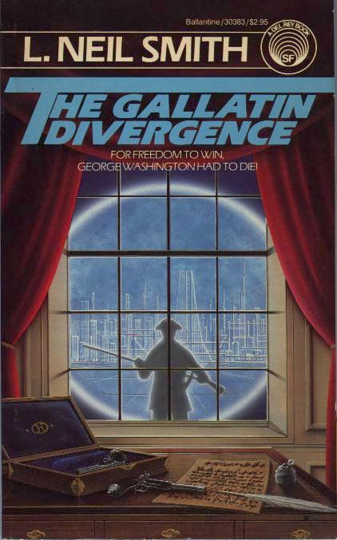

The Gallatin Divergence
by L. Neil Smith
Win Bear travels back in time to 1794 to save Albert Gallatin, founder of the North American Confederacy, from assassins. First appearance in print of the author's Covenant of Unanimous Consent".
New York: A Del Rey Book Published by Ballantine Books, 1985
223 pages, mass-market paperback
Library of Congress Catalog Card Number: 85-90720
ISBN 0-345-30383-0
First Edition: September 1985
Cover art by Rick Sternbach